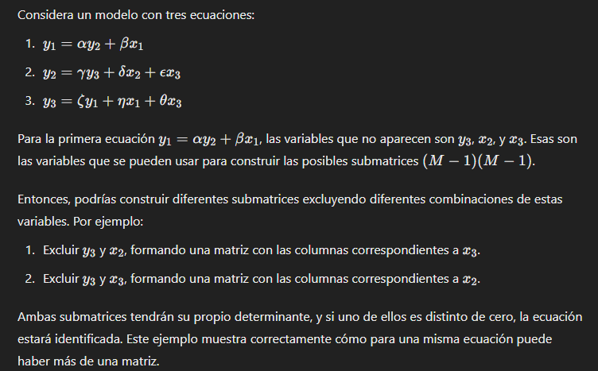
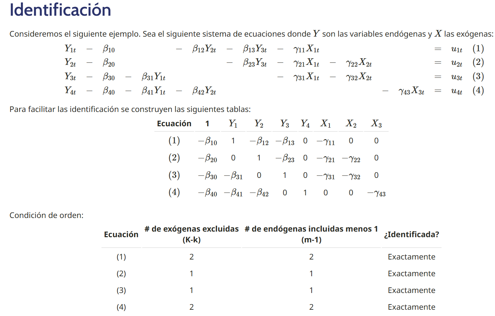
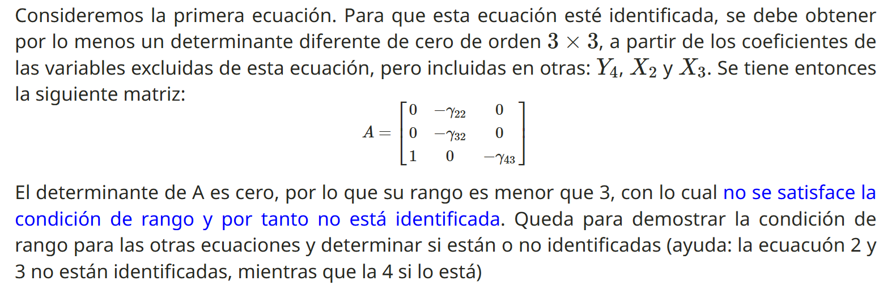
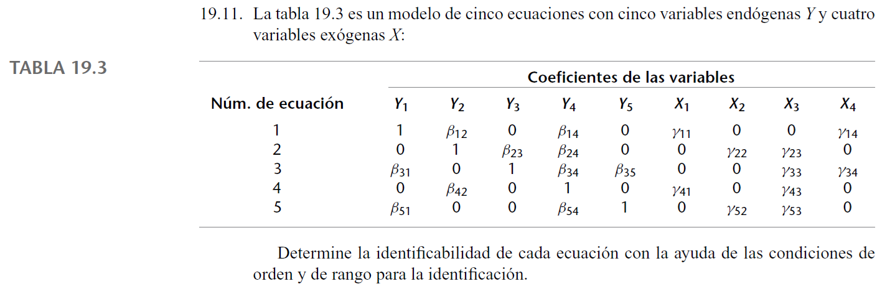
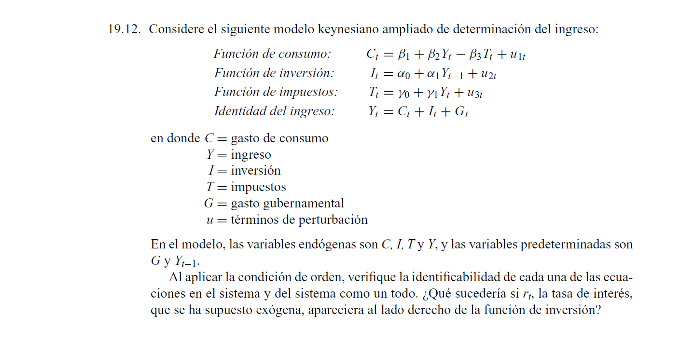

El problema en este modelo es que uno de los regresores (el regresor endógeno) de cada ecuación, se correlacionará con el error estocástico.
Para saber si el modelo está identificado (es decir, si tiene una solución única), hay dos condiciones que deben cumplir todas las ecuaciones del modelo:
Condición de orden (Necesaria): al menos una de las variables exógenas del modelo debe estar excluida de la ecuación.
\(\mathbf{z_2 \beta_2}\) están excluidas de la ecuación (1).
\(\mathbf{z_1 \beta_1}\) están excluidas de la ecuación (2).
Condición de rango (Necesaria y Suficiente): alguna de las demás ecuaciones contiene al menos una de esas variables exógenas del modelo excluidas de la ecuación.
\(\mathbf{z_2 \beta_2}\), excluidas de la ecuación (1), están incluidas en (2).
Por lo tanto, la ecuación (1) está identificada.
\(\mathbf{z_1 \beta_1}\), excluidas de la ecuación (2), están incluidas en (1).
Por lo tanto, la ecuación (2) está identificada.
Identificación para un modelo con \(n\) ecuaciones simultáneas
\(M\) = Número de variables endógenas del modelo.
\(m_i\) = Número de variables endógenas en la ecuación \(i\).
\(K\) = Número de variables exógenas del modelo.
\(k_i\) = Número de variables exógenas en la ecuación \(i\).
Condición de orden (Necesaria):
1.1. Encuentro \(K - K_i\) para cada ecuación.
1.2. Encuentro \(m_i - 1\) para cada ecuación.
1.3. Si \(K-k_i \geq m_i - 1\), se cumple la condición de orden. (En igualdad, identificación exacta, en desigualdad “mayor que”, sobreidentificación).
⚠️ Recordar que en el enfoque de MC2E se puede tener un pequeño grado de sobreidentificación.
Condición de rango (Necesaria y Suficiente):
2.1. Para cada ecuación, construyo matrices de dimensiones \((M-1),(M-1)\) con los coeficientes que tienen en las demás ecuaciones las variables excluidas de esta ecuación. ⚠️ Puede haber una matriz o varias.
2.2. Calculo el determinante de las matrices.
2.3. Si al menos un determinante es distinto de cero, la ecuación está identificada.
Ejemplo de varias matrices en la condición de rango
 Elaborado con ChatGPT
Ejemplo de clase, determinación de identificación de un modelo
  Diapositivas de clase del profesor Gustavo García
Ejemplo con código en R
Usaré librerías distintas a las del profesor para hallar el determinante de la condición de rango. Utilizaré el lenguaje Yacas que es un lenguaje para representar símbolos algebráicos y hacer operaciones matemáticas con ellos. Para utilizarlo en R, podemos instalar el paquete Ryacas.
# Cargar el paquete Ryacaslibrary(Ryacas)# Definir las variables simbólicasgamma22 <-ysym("gamma22")gamma32 <-ysym("gamma32")gamma43 <-ysym("gamma43")# Crear la matriz en formato Yacas: es una lista de listas con los valores de la matriz en su interiormat_str <-"List(List(0, -gamma22, 0), List(0, -gamma32, 0), List(1, 0, -gamma43))"# Cálculo del determinantedeterminant <-yac_str(paste("Determinant(", mat_str, ")"))# Simplificación del determinante (innecesario en este ejemplo, pero puede ser necesario cuando el determinante hallado sea distinto de cero)determinant_simplified <-yac_str(paste("Simplify(", determinant, ")"))# Mostrar el determinante halladoprint(determinant_simplified)
[1] "0"
Ejercicio 19.11 Gujarati
 Tomado del libro de Gujarati, capítulo 19
Condición de orden:\[K=4, k_1=2, k_2=2, k_3=2, k_4=2, k_5=2\]
\[M=5, m_1=2, m_2=3, m_3=4, m_4=2, m_5=3\] La condición se cumple siempre que \(K-k_i \geq m_i - 1\).
Para la ecuación 1: \(K-k_1 \geq m_1 - 1: \quad \quad 4-2>2-1\)
Para la ecuación 2: \(K-k_2 \geq m_2 - 1 : \quad \quad 4-2=3-1\)
Para la ecuación 3: \(K-k_3 \geq m_3 - 1 : \quad \quad 4-2<4-1\)
Para la ecuación 4: \(K-k_4 \geq m_4 - 1 : \quad \quad 4-2>2-1\)
Para la ecuación 5: \(K-k_5 \geq m_5 - 1 : \quad \quad 4-2=3-1\)
La condición de orden es necesaria, más no suficiente. Al ser necesaria, si no se cumple para alguna ecuación, podemos afirmar que no está identificada.
Condición de rango: El determinante de al menos una de las matrices \((M-1)\times(M-1)\) de las variables excluidas de cada ecuación es distinto de cero.
Para la primera ecuación:
# Cargar el paquete Ryacaslibrary(Ryacas)# Definir las variables simbólicasbeta23 <-ysym("beta23")beta35 <-ysym("beta35")gamma22 <-ysym("gamma22")gamma52 <-ysym("gamma52")gamma23 <-ysym("gamma23")gamma33 <-ysym("gamma33")gamma43 <-ysym("gamma43")gamma53 <-ysym("gamma53")# Crear la matriz en formato Yacas: es una lista de listas con los valores de la matriz en su interiormat_str <-"List(List(beta23, 0, gamma22, gamma23), List(1, beta35, 0, gamma33), List(0, 0, 0, gamma43), List(0, 1, gamma52, gamma53))"# Cálculo del determinantedeterminant <-yac_str(paste("Determinant(", mat_str, ")"))# Simplificación del determinante (innecesario en este ejemplo, pero puede ser necesario cuando el determinante hallado sea distinto de cero)determinant_simplified <-yac_str(paste("Simplify(", determinant, ")"))# Mostrar el determinante halladoprint(determinant_simplified)
# Cargar el paquete Ryacaslibrary(Ryacas)# Definir las variables simbólicasgamma11 <-ysym("gamma11")gamma14 <-ysym("gamma14")beta31 <-ysym("beta31")beta35 <-ysym("beta35")gamma41 <-ysym("gamma41")beta51 <-ysym("beta51")# Crear la matriz en formato Yacas: es una lista de listas con los valores de la matriz en su interiormat_str <-"List(List(1,0,gamma11,gamma14), List(beta31,beta35,0,gamma14), List(0,0,gamma41,0), List(beta51,1,0,0))"# Cálculo del determinantedeterminant <-yac_str(paste("Determinant(", mat_str, ")"))# Simplificación del determinante (innecesario en este ejemplo, pero puede ser necesario cuando el determinante hallado sea distinto de cero)determinant_simplified <-yac_str(paste("Simplify(", determinant, ")"))# Mostrar el determinante halladoprint(determinant_simplified)
Para la tercera ecuación no podemos crear una matriz de dimensiones \((M-1)\times(M-1)\).
Para la cuarta ecuación:
Podemos crear varias matrices de dimensiones \((M-1)\times(M-1)\).
Comenzamos con \(Y_1, Y_3, Y_5, X_2\)
# Cargar el paquete Ryacaslibrary(Ryacas)# Definir las variables simbólicasbeta23 <-ysym("beta23")gamma22 <-ysym("gamma22")beta31 <-ysym("beta31")beta35 <-ysym("beta35")beta51 <-ysym("beta51")gamma52 <-ysym("gamma52")# Crear la matriz en formato Yacas: es una lista de listas con los valores de la matriz en su interiormat_str <-"List(List(1,0,0,0), List(0,beta23,0,gamma22), List(beta31,1,beta35,0), List(beta51,0,1,gamma52))"# Cálculo del determinantedeterminant <-yac_str(paste("Determinant(", mat_str, ")"))# Simplificación del determinante (innecesario en este ejemplo, pero puede ser necesario cuando el determinante hallado sea distinto de cero)determinant_simplified <-yac_str(paste("Simplify(", determinant, ")"))# Mostrar el determinante halladoprint(determinant_simplified)
[1] "beta23*beta35*gamma52+gamma22"
Dado que ya encontré un determinante distinto de cero, paso a la siguiente ecuación.
Para la quinta ecuación:
# Cargar el paquete Ryacaslibrary(Ryacas)# Definir las variables simbólicasbeta12 <-ysym("beta12")gamma11 <-ysym("gamma11")gamma14 <-ysym("gamma14")beta23 <-ysym("beta23")beta42 <-ysym("beta42")beta41 <-ysym("beta41")# Crear la matriz en formato Yacas: es una lista de listas con los valores de la matriz en su interiormat_str <-"List(List(beta12, 0, gamma11, gamma14), List(1, beta23, 0, 0), List(0, 1, 0, gamma14), List(beta42, 0, gamma41, 0))"# Cálculo del determinantedeterminant <-yac_str(paste("Determinant(", mat_str, ")"))# Simplificación del determinante (innecesario en este ejemplo, pero puede ser necesario cuando el determinante hallado sea distinto de cero)determinant_simplified <-yac_str(paste("Simplify(", determinant, ")"))# Mostrar el determinante halladoprint(determinant_simplified)
Podemos afirmar que hay identificación cuando al menos un determinante es distinto de cero. No hay identificación, en cambio, cuando todos los determinantes son cero, o cuando no puedo construir una de las ecuaciones.
Ejercicio 19.12 Gujarati
 Tomado del libro de Gujarati, capítulo 19
Condición de orden:\[K=2, k_1=0, k_2=1, k_3=0, k_4=1\]
\[M=4, m_1=3, m_2=2, m_3=2, m_4=3\]
Para la primera ecuación: $K-k_1 m_1 - 1 : -0 = 3-1 $ Para la segunda ecuación: \(K-k_2 \geq m_2 - 1 : \quad \quad 2-1 = 2-1\) Para la tercera ecuación: \(K-k_3 \geq m_3 - 1 : \quad \quad 2-0 > 2-1\) Para la cuarta ecuación: \(K-k_4 \geq m_4 - 1 : \quad \quad 2-1 < 3-1\)
Si agregamos la tasa de interés como variable exógena en la ecuación de la inversión:
Para la primera ecuación: $K-k_1 m_1 - 1 : -0 > 3-1 $ Para la segunda ecuación: \(K-k_2 \geq m_2 - 1 : \quad \quad 3-2 = 2-1\) Para la tercera ecuación: \(K-k_3 \geq m_3 - 1 : \quad \quad 3-0 > 2-1\) Para la cuarta ecuación: \(K-k_4 \geq m_4 - 1 : \quad \quad 3-1 = 3-1\)
A pesar de que en el ejercicio no me lo están pidiendo, habría que comprobar con la condición de rango si las cuatro ecuaciones están de verdad identificadas. Recordar que la condición de orden es necesaria pero no suficiente.